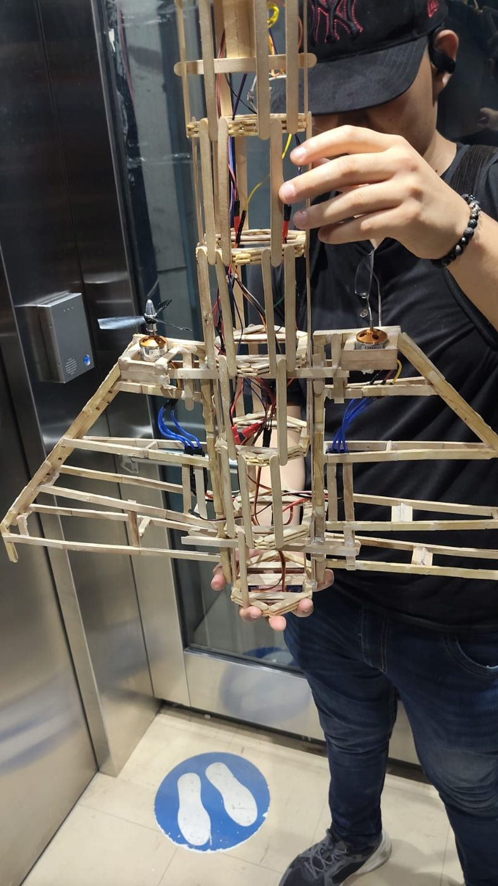
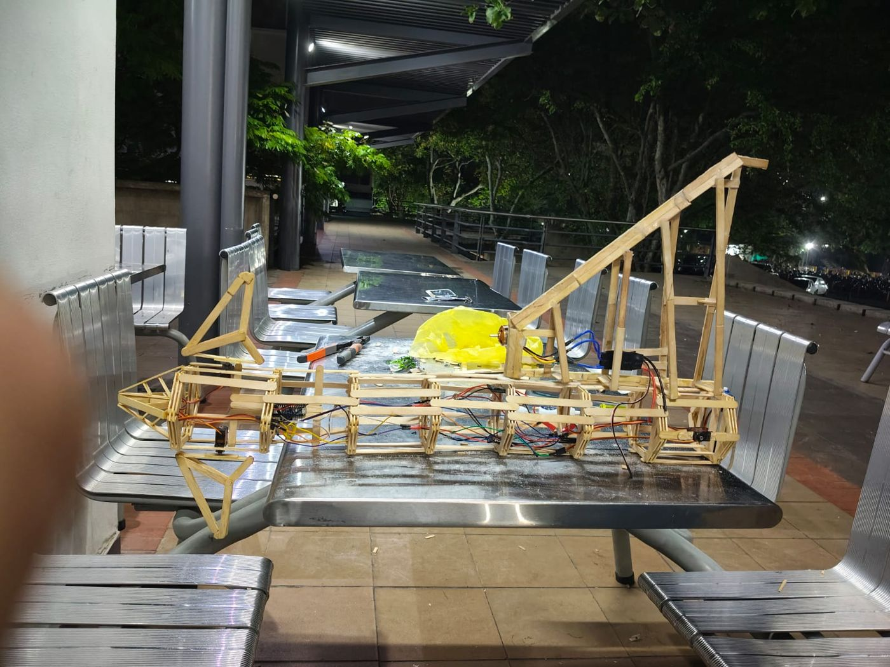
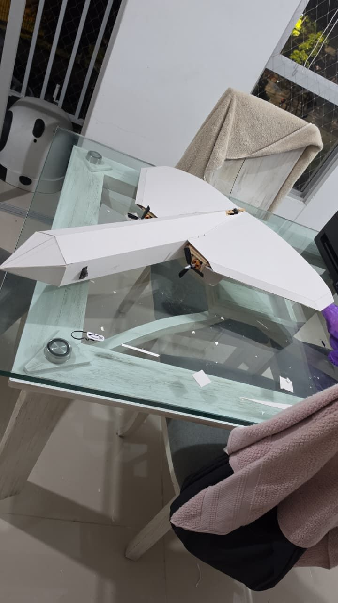

Prototipo de avión a escala con vuelo autónomo, sensores de telemetría y una red neuronal a bordo (TensorFlow Lite) capaz de detectar perturbaciones y corregir la trayectoria.
Ver proyecto Ver videoMantener una trayectoria estable sin un operador humano sigue siendo uno de los grandes retos de los UAV de ala fija a pequeña escala.
Eficiencia aerodinámica y alcance, pero con retos de estabilidad, orientación y seguimiento de trayectorias.
Corrientes de aire, vibraciones de los motores y cambios en el peso o la inclinación desvían la aeronave.
Aceleraciones, ángulos de inclinación y vibraciones alimentan el entrenamiento de la red neuronal.
El modelo se entrena con TensorFlow y se convierte con TensorFlow Lite para correr en un microcontrolador.



Los controladores PID dependen de una buena sintonización y se degradan ante perturbaciones no previstas. ¿Puede una red neuronal embebida hacerlo mejor?
Diseñar y construir un prototipo de avión a escala para vuelo autónomo que identifique perturbaciones, genere acciones de autocorrección y mantenga una trayectoria recta estable sin control remoto continuo.
La estructura del avión, con motores, sensores y electrónica para las pruebas.
Datos de aceleración, inclinación y vibraciones en distintas condiciones.
Red neuronal en TensorFlow, con conversión y cuantización a TensorFlow Lite.
El modelo en un controlador embebido que genera las señales de control.
Pruebas de vuelo: detección, respuesta, tiempo de inferencia y desviación.
Dimensiones, ubicación de motores, distribución de masa y verificaciones iniciales.
IMU, calibración y registro con motores apagados y encendidos.
Limpieza, filtrado, normalización, etiquetado y división en entrenamiento, validación y prueba.
Entrenamiento en TensorFlow para distinguir vuelo estable de alteraciones.
TensorFlow Lite Micro, cuantización y medición de inferencia (ms) y memoria.
Sensores, controlador, modelo y motores; pruebas en tierra antes de volar.
Recorrido de más de 5 m en línea recta evaluando estabilidad, trayectoria, detección, respuesta y autonomía.
En Colombia la UAEAC regula las aeronaves no tripuladas. La referencia es el RAC 100 (Resolución 01983 del 27 de septiembre de 2023); se verificarán requisitos y autorizaciones antes de volar.